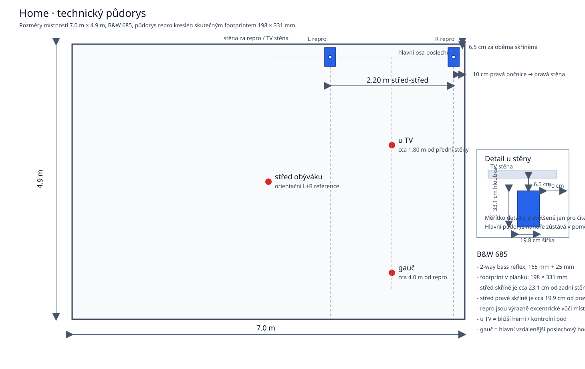

Prostor a systém
- Místnost: obývák, délka ve směru vyzařování 4.90 m, šířka 7.00 m, výška 3.30 m
- Přibližný objem místnosti: 113.2 m3
- Systém: stereo pár Bowers & Wilkins 685
- Zesilovač: Denon PMA-495R, modifikovaný / recapped by CASEA
- Typ: 2-way bass reflex compact speaker
- Rozměry jedné bedny: 340 × 198 × 331 mm (V × Š × H)
- Půdorysný footprint jedné bedny: 198 × 331 mm
- Měniče: 165 mm Kevlar cone + 25 mm aluminium dome
- Citlivost / impedance / crossover: 88 dB, 8 ohm, 4 kHz
- Doporučený výkon zesilovače: 25-100 W
- Výška středu repro: 1.00 m
- Rozteč repro: 2.20 m
- Vzdálenost zadní stěny repro od zadní stěny místnosti: 6.5 cm
- Z toho plyne půdorysný střed skříně cca 23.1 cm od zadní stěny místnosti
- Pravá bočnice pravého repro je 10 cm od pravé stěny, střed pravé skříně cca 19.9 cm
Publikované frekvenční údaje se v podkladech mírně liší: objevuje se 49-22 000 Hz (±3 dB) i širší katalogové 42 Hz-50 kHz. Pro tuto dokumentaci je důležitější reálné in-room měření než samotný katalogový rozsah.
Externí Review A Jejich Význam Tady
Technicky nejdůkladnější externí zdroj je čtyřdílné rozebrání a proměření na AudioExcite: part 1, part 2, part 3, part 4. Důležitý doplněk je i pozdější ASR thread s domácím quasi-anechoic měřením.
Oba zdroje se v zásadě shodují, že samotné drivery BW685 jsou na cenu slušné, ale slabší místo je původní velmi jednoduchá výhybka. AudioExcite popisuje kabinet jako poctivější, než bývá v této třídě běžné, port tuning vychází kolem 48 Hz a impedance minima přibližně 4.79 ohm @ 197 Hz a 3.59 ohm @ 20 kHz, takže bedna se prakticky chová spíš jako lehčí 4ohm zátěž než čistých nominálních 8 ohm. Hlavní výtka se týká oblasti kolem crossoveru zhruba na 4 kHz a zvýrazněného tweeteru nad 10 kHz, ne nutně nedostatku hlubokého basu.
To není v rozporu s domácími daty. Tady aktuálně dominuje hlavně room response a asymetrie v pásmu 40-80 Hz, takže pod cca 150 Hz rozhoduje především místnost. Nad modalitou ale může být část charakteru stále daná i samotnou bednou a její výhybkou. Pro případné zásahy do repro proto dává smysl nejdřív řešit postavení a symetrii. Teprve kdyby po tom pořád vadilo horní pásmo, dával by smysl jednoduchý reverzibilní tweeter attenuator typu Mod 0 z AudioExcite, ne rovnou plná přestavba výhybky.
Asymetrie postavení
- pravá bočnice pravého repro je 10 cm od boční stěny místnosti
- levý repro je vůči místnosti výrazně excentricky jinde
- malá mezera za repro i velmi těsná vazba pravého repro k boční stěně podporují jinou basovou vazbu L a R
Měřicí pozice
- u TV: bližší pozice u televize, kde se hrají hry s gamepadem; cca 1.80 m od přední stěny, přibližně v ose repro
- gauč: cca 4.0 m od repro, v ose repro
- střed obýváku: geometrický střed místnosti

Režim měření
- REW, 48 kHz, 256k log sweep, 2 sweepy
- sweep level: -12.2 dBFS
- zvukovka / interface: Scarlett 2i2 4th Gen
- mikrofon: t.bone MM-1, kalibrační křivka odečtena v REW
- mikrofon na Input 1, loopback reference na Input 2
- zesilovač během měření: Denon PMA-495R v režimu source direct
- source direct obchází balance, bass, treble a loudness
- relevantní úpravy zesilovače: EPCOS 10 000 uF filtrace, HEXFRED v hlavním zdroji, nové lokální zdroje a vyčištěné / opravené přepínače
- gain mikrofonu ani zesilovače nebyly kalibrovány na absolutní SPL
Prakticky tedy tato sada slouží hlavně pro porovnání tvaru odezvy, decay a L/R asymetrie, ne pro přesné absolutní SPL hodnocení.